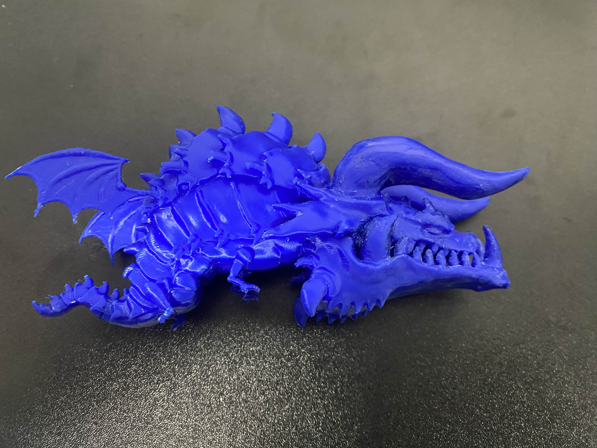
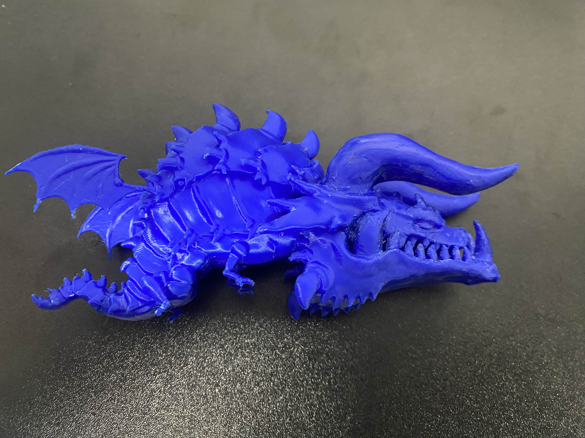

Kaggleセンサデータコンペ 参加中
開始時間：2025/6/8 ～
Kaggleのセンサデータコンペにて、人の行動を加速度・ジャイロセンサから推定するタスクに挑戦中です。

プロジェクト概要
Kaggleの「CMI Sensor Data for Human Activity
Recognition」コンペに参加し、マルチクラス分類モデルの構築に取り組んでいます。現時点では前処理・特徴量エンジニアリングを中心に開発を進行中です。
コンペ開催中のため、規約に則りソースコードや具体的な手法の公開は控えています。
▶ コンペ公式ページ（Kaggle）
解決すべき課題
- 少ないデータで精度を出す
- センサーデータ特有のノイズ
- クラス不均衡データの処理
※コンペ開催中のため、成果物のビジュアル公開は終了後に予定しています。
Kaggle細胞コンペ（BYU Flagellar Motors）
制作期間：2週間
細菌画像からフラジェラー・モーターの位置を検出する物体検出タスクに参加

コンペ概要
BYU主催のKaggleコンペ「Locating Bacterial Flagellar Motors」に参加。細菌の3Dトモグラム画像から、べん毛モーターの位置を正確に検出するアルゴリズムを構築する課題に取り組みました。
▶ コンペ公式ページ（Kaggle）成果と学び
目標としていた上位10%には届きませんでしたが、コンペ終了後も上位者の解法を分析し、推論戦略や検出精度の改善余地について学びました。物体検出タスクにおける後処理の工夫や学習データ拡張の効果を実感することができました。
使用技術・手法
- YOLOv11を用いた物体検出モデルの再学習
- TTA（Test Time Augmentation）による推論強化
- WBF（Weighted Box Fusion）によるボックス統合
- データ拡張：回転、反転、色調変化、モザイク、MixUp、CopyPasteなど
- AdamWオプティマイザ、早期終了などの導入

四足歩行ロボット
制作期間：2週間
Unity ML-Agents による強化学習で歩行を習得する四足歩行ロボットを制作

プロジェクト概要
Unity ML-Agents Toolkit に付属する四足歩行チュートリアルを参考に、自作のロボットモデルを用いた歩行学習を行いました。 脚は十字型に配置されており、平坦な地形上で目標物に向かって効率的に移動することを目的としています。 学習には強化学習アルゴリズム「Proximal Policy Optimization（PPO）」を使用し、基本的な歩行メカニズムの理解と最適化に注力しました。
成果と学び
チュートリアルのモデルほど精度良くは学習できなかったものの、 Unityにおける関節の動きやトルク調整、強化学習における報酬と罰のバランスについて深く学ぶことができました。 強化学習における「学習させたい行動をどう報酬で導くか」という設計力の重要性を実感できました。。
技術的課題と工夫
- Unity上での関節構造（Hip/Knee）の組み立てと駆動制御
- トルク制御や回転スケールの調整による安定した歩行の実現
- 報酬設計（地面接触・ターゲットへの接近・移動速度）
- オリジナルモデルの学習安定化とバランス取り


ブラックドラゴン
制作期間：約1週間
Blenderで制作した既存ゲームのキャラクターをベースとしたモデル

プロジェクト概要
既存ゲームに登場するブラックドラゴンのキャラクターモデルをBlenderで制作し、3Dプリンターでの出力を目的として設計しました。
技術的な挑戦
- 既存キャラクターのリファレンスを元に忠実にモデリング
- 3Dプリント時の造形制限を考慮したモデリングとパーツ分割
- 高詳細なディテールを保ちながらポリゴン数を最適化
工夫したポイント
プリント時のサポート材を最小限に抑えるため、パーツ分割を工夫し、組み立てやすさも考慮しました。テクスチャはプリント後の塗装を前提にして、モデリングに重点を置いています。
学んだこと
ゲームキャラクターの3Dプリント用モデル作成には、造形の物理的制約への理解と設計の工夫が不可欠であることを実感しました。


 

イフリート
制作期間：3日
Blenderで制作したゲーム用モデル
デザインコンセプト
炎の精霊イフリートをテーマに、迫力のあるクリーチャーモデルを短期間で制作することに挑戦しました。
スカルプティング技法
- ダイナミックスカルプトによる基本形状作成
- ディテールブラシによる質感表現
- 炎エフェクトの表現手法
制作の工夫
限られた時間の中で効率的にクオリティを上げるため、シルエットに重点を置いた造形を心がけました。炎の表現にはパーティクルシステムも併用しています。


AI当たり屋ゲーム
制作期間：2日
Pythonで開発した画像認識を活用したゲーム
プロジェクト概要
YOLOを用いたリアルタイム物体検出を取り入れた当たり判定ゲームを開発しました。
技術的挑戦
- YOLOモデルの学習と最適化
- OpenCVによる映像処理の高速化
- リアルタイム性を考慮したゲームロジック設計
工夫した点
物体検出精度の向上と遅延削減のバランスを重視。ゲーム性を損なわないUI設計と操作性の向上にも注力しました。


部室スマートキー 保守中
制作期間：2週間
Blenderで制作した3Dプリントフィギュア用（※プロジェクトに合わせて説明を修正してください）
プロジェクト概要
部室の鍵をスマート化し、非接触での解錠を可能にするシステムを開発しました。
使用した技術
- discord API を使用した部室スマートキー
- Python GPIO によるモーター制御
- 3Dプリントケースの設計・製作
工夫した点
ユーザビリティを重視し、スマートフォンアプリから簡単に管理できるインターフェースを設計しました。堅牢かつ軽量な3Dプリントケースで耐久性を確保しました。


アヒルパーカマン
制作期間：1週間
Blenderで制作した人形ローポリモデル
制作コンセプト
可愛らしいアヒルをモチーフにした、ゲーム用ローポリキャラクターモデルの制作に挑戦しました。
技術的なポイント
- 効率的なポリゴン削減テクニック
- UV展開とテクスチャマッピング
- アニメーション用のリギング
制作プロセス
まずハイポリモデルを作成し、その後リトポロジーでローポリ化。パーカーの質感表現にこだわり、シンプルながらも魅力的なキャラクターに仕上げました。


魚達の闘争
制作期間：1週間
Unityで制作した2D対戦ゲーム

制作意図・目標
ゲームパッド（Joy-Con）対応のマルチプレイゲームを通して、UnityのInput Systemを深く学習することを目標としました。
技術的な挑戦
- Unity Input Systemを使った複数コントローラー対応
- 水中の物理演算と浮力表現
- リアルタイム対戦のゲームバランス調整
工夫したポイント
水中らしさを表現するために、魚の動きに加速度制限を設け、水流エフェクトをパーティクルシステムで実装しました。また、Joy-Conの振動機能を活用して、衝突時のフィードバックを強化しています。
学んだこと
Input Systemの柔軟性と、物理演算を使ったゲーム性の作り込みの重要性を実感しました。短期間でのプロトタイプ開発のコツも掴めました。